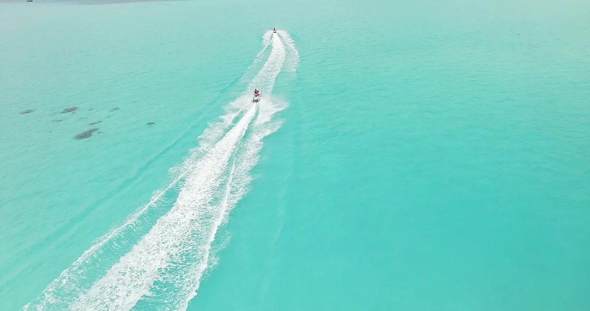

Der Ausflug
Shark Point, eine Sandbank und die Sonne, die auf dem Heimweg untergeht.
Ein Nachmittag nach Süden. Riffhaie, solange das Licht noch hoch steht, eine Sandbank, wenn es fällt, und die ganze Rückfahrt unter dem Sonnenuntergang.
4,5StundenDauer
12Gäste
13:30Abfahrt
18:00Rückkehr
Der Tag
Wie der Tag verläuft
Die Zeiten sind Richtwerte. Die endgültige Route legt der Kapitän am Morgen fest — nach Tide, Wind und Licht.
- 13:30Steg Hulhumalé
Nach Süden zum Atollrand.
- 14:15Shark Point
Schnorcheln am Riff, zwischen den Haien und allem anderen, was es hält.
- 15:30Sandbank
Weißer Sand, eine klare Lagune und die beste Stunde für Fotos.
- 16:30Abendsnack
Ein kleiner Snack und Getränke an Bord.
- 17:00Sonnenuntergangsfahrt
Wieder nach Norden, langsam, mit der sinkenden Sonne.
- 18:00Steg Hulhumalé
Längsseits.
Preise
Was der Preis umfasst
Halber Tag
USD 950
Für sieben Personen, das ganze Schiff. Jede andere Zahl wird auf Anfrage kalkuliert.
- Dauer
- 4,5 Stunden
- Abfahrt
- 13:30 · Hulhumalé
- Gäste
- Bis zu 12
Inbegriffen
- Bootsausflug
- Schnorcheln am Shark Point
- Stopp an der Sandbank
- Abendsnack und Getränke
- Sonnenuntergangsfahrt
- Schwimmen und Schnorcheln
Nicht inbegriffen
- Alkohol, sofern das Programm nichts anderes sagt
- Tauchausrüstung auf Nicht-Tauchcharter
- Zusatzleistungen von der Ausflugsseite
- Trinkgeld

Ebenfalls unterwegs